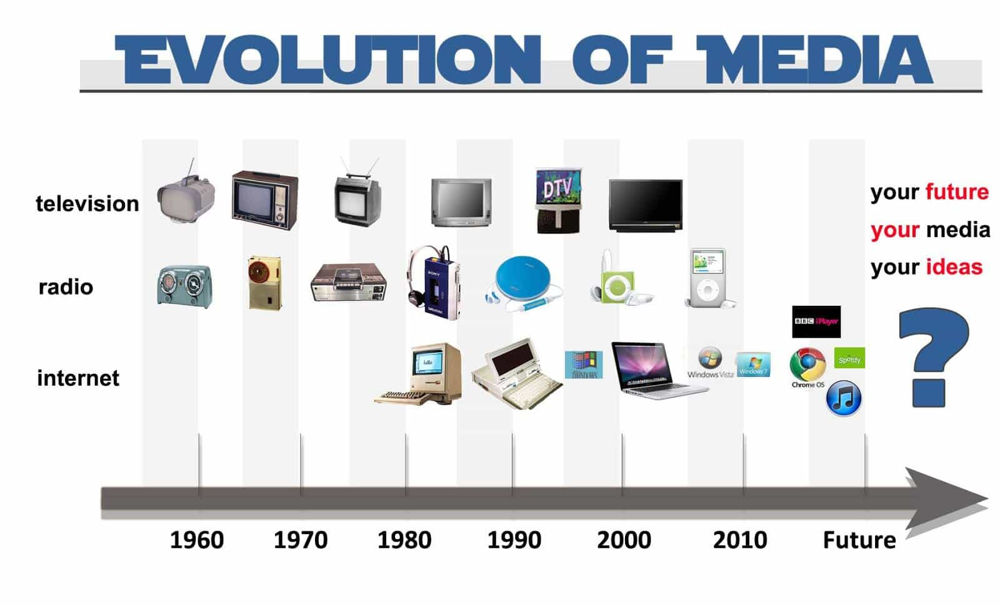

In my previous article, I wrote about how Bitcoin is destroying the global banking cartel. It’s a decentralized, peer to peer method of transaction that can be done anywhere in the world. In other words, it can’t be traced, it can’t be hacked, and it can’t be printed. While Bitcoin and other cryptocurrencies have been loosening the stranglehold that bankers and payment processors have on the financial markets, something else has begun to happen.
Over the past year, as conservatives have begun to wake up and realize the perils of having gigantic leftist conglomerates, we’ve started to see an interesting phenomena. Rather than power becoming more centralized, which is typical of technological evolution, power is actually becoming more decentralized. In layman’s terms, the power is slowly going back to the people.
From 5,000 BC to Now

For millenia, governments and the powers that be have been trying to control information. It’s not hard to see why, either—when you control the information, you control the people. Unfortunately for (((them))), however, the outlets for media distribution have slowly been expanding to allow anyone with basic technology to voice their opinion.
Take, for example, the following sequence of media evolution:
- 5,000 BC to 1440 AD – Scribes and clergymen controlled 100% of non-verbal information. Only the highest echelons of society had access to information. Nobody else could even read.
- 1440 to 1850 – The hand-operated printing press created massive intellectual outgrowth as the cost of books was driven down. Still, however, the top .001% created the information.
- 1850 to 1920 – The emergence of the machine operated printing press allowed for numerous newspapers to begin reporting local and national news. At this point, the top .01% created what was printed.
- 1920 to 1960 – Radio became popular, which signified a massive shift from written word to spoken word. Although still heavily centralized, radio allowed ideas to spread far more rapidly than before. At this point, roughly the top .1% created the information.
- 1960 to 1990 – As television grew, thousands of men eager to share their opinions and ideas followed suit. At this point, the top 1% ccreated the information.
- 1990 to 2010 – With the digital age revolutionizing the spread of information, we began to see a surge in early alternative news sources.
- 2011 to 2017 – As platforms such as Twitter, Facebook, YouTube, and WordPress have grown, literally anybody with a blog and a camera can reach millions. The elites have begun to feel this shift, and have begun to push back hard. At this point, the top 25% create information.
While we’ve certainly made massive leaps and bounds in who creates the information, the power structures which distribute the information are still relatively centralized. Even though anybody with access to a computer can create information, the top .00001% of society still has a say in whether or not it’s seen and allowed.
Companies such as YouTube, Google, Facebook, and Twitter have repeatedly shown us that they have no issue with censoring conservative and nationalist viewpoints. Although they don’t realize it yet, the global elite are creating their own demise: the decentralization of the very power structures which allow them to control us.
The Death of YouTube
In the wake of the recent censorship protocol YouTube has put into place, conservatives have been looking for alternative platforms to spread ideas. For years, one single website had a monopoly on 95% of online video streaming services, but that monopoly is now starting to disintegrate.
After YouTube began demonetizing pro-Trump YouTubers in 2016, many conservatives began to panic, fearing that an Orwellian future was not far away. When YouTube crossed the line by putting conservative videos into “limbo,” however, a new video sharing platform emerged—and it can’t be controlled by a handful of globalist executives. It’s entirely decentralized.
Meet LBRY, a free, open, and community run digital database filled with endless hours of video. Although it’s only in its beta version, the decentralized library (no pun intended) has gained massive support all across the globe. LBRY works by utilizing block chain technology, where random volunteers around the globe can volunteer to store data. This effectively decentralizes the video sharing network, putting it into the hands of literally tens of thousands of users, just like you and me, and because of this, it’s immune from censorship.
Blockchain Technology
I predict that new digital technology known as blockchain will be a the forefront of this decentralization process. Although I’m not tech-savvy enough to fully understand it, I have a basic grasp of the concept, and from what I understand it’s completely revolutionary, something that will be even more world-changing than the printing press or the locomotive engine.
Let’s use Wikipedia for a quick definition of what the blockchain is:
A blockchain[1][2][3] – originally block chain[4][5] – is a continuously growing list of records, called blocks, which are linked and secured using cryptography[1].[6] Each block contains typically a hash pointer as a link to a previous block,[6] a timestamp and transaction data.[7]
By design, blockchains are inherently resistant to modification of the data. Functionally, a blockchain can serve as “an open, distributed ledger that can record transactions between two parties efficiently and in a verifiable and permanent way.”[8]
For use as a distributed ledger a blockchain is typically managed by a peer-to-peer network collectively adhering to a protocol for validating new blocks. Once recorded, the data in any given block cannot be altered retroactively without the alteration of all subsequent blocks and a collusion of the network majority.
In layman’s terms, blockchain decentralizes records, and can be applied to practically anything that’s digital. The world doesn’t realize it yet, but historians will look back on this technology as the final nail in the global aristocracy’s coffin—Soros and his Bilderberg pals are too isolated in their own bubbles to realize this.
Using blockchain technology, we can effectively circumvent the “centralized power” problem by creating a free, open, and community supported network of ANYTHING—from money to videos and data to medical records to business deals. The practical applications are absolutely incredible.
There’s A Pattern Here
“Hold on, Jon—you’ve only referenced a few points. Are you cherry picking your data?” This is a question that many readers may be wondering, and while it may seem like I’m selectively choosing my data points, if you look closely you’ll start to notice a very intriguing pattern.
As I laid in the previous section, for the past 7,000 years, the means of creation and distribution have slowly become more and more decentralized. Now, it’s only a matter of time before this quantum leap in civilization bleeds into every other aspect of our lives.
We’ve seen it with Bitcoin, Ethereum, and other digital currencies. I’ve personally made ridiculous gains from investing in the cryptocurrencies such as Bitcoin and Ethereum (among others), and know men that have seen returns as high as 22,000% in less than a year.
We’ve seen this pattern with information, as well. With radical new applications such as Filecoin, information can be crowdsourced so that no single entity can control it. With coins such as Golem, even data processing can be crowdsourced, so that we no longer have to rely on a monopoly of distribution.
How You Can Benefit
As this decentralization process continues to advance, we will all benefit—as the powers that be begin to lose their chokehold on Western Civilization, an era of prosperity and cultural revival will emerge.
Some will benefit more than others, however; especially those who can see the changing tides and act accordingly. If I were you, I’d take a few steps to ensure that you can not only profit financially from the upcoming changes, but in other ways as well.
- Safeguard yourself – As society undergoes these transformations, there will no doubt be retaliation. The elite does not want to lose their power and will do anything they can to stop this from happening. So prepare yourself: buy guns, buy food, get in good shape, and learn some basic survival skills.
- Invest in cryptocurrency – I previously laid out my plan to make $1,000,000 in this article here. I recommend you follow its advice to the T.
- Become a creator – With the decentralization of power, anybody can create new content. Just a decade ago, the ideas discussed on ROK wouldn’t stand a chance of reaching the public. Now, however, we’ve got a reader base in the tens of thousands. Start a blog, create a YouTube channel, sell an eBook, just do something to set yourself up for the future.
Millions of men have already begun to feel the shift—it’s only a matter of time before the powers that be start to crumble, and humanity can finally be free. Although many may call my visions for the future idealistic or even naive, I would challenge them to look at the good in people. It seems that no matter how hard they try, no matter how much they control, and no matter how many people they silence, the elite cannot resist the human spirit.
If you want to support Jon’s work and get more SHREDDED than you ever thought possible, check out his Body of an Alpha fitness guide—on sale for ROK readers only.
Read Next: How Cryptocurrency Is Destroying The Jewish Globalist Banking Cartel